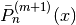
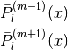
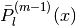
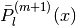

pylayers.antprop.spharm module¶
This module handles Scalar and Vector Spherical Harmonics in PyLayers
Class VectorCoeff¶
| VectorCoeff.__init__(typ[, fmin, fmax, ...]) | |
| VectorCoeff.inits1(data, ind) | data : |
class SSHCoeff¶
| SSHCoeff.__init__(Cx, Cy, Cz) |
|
||
| SSHCoeff.s2tos3([threshold]) | convert scalar spherical coefficients from shape 2 to shape 3 | ||
| SSHCoeff.sets3(Cx, Cy, Cz) |
|
class SCoeff¶
| SCoeff.__init__([typ, fmin, fmax, lmax, ...]) | init VCoeff | ||
| SCoeff.__repr__() | |||
| SCoeff.inits2(data, ind) | initialize shape 2 format | ||
| SCoeff.inits3(data, ind, k) | initialize shape 3 format | ||
| SCoeff.delete(ind, typ) | delete coeff | ||
| SCoeff.put(typ) | recover last deleted coeff | ||
| SCoeff.delete3(ind) | delete3(self,ind): delete coeff.s3 | ||
| SCoeff.put3(i, i3) |
|
||
| SCoeff.s3tos2() | transform shape3 to shape 2 | ||
| SCoeff.plot([typ, title, xl, yl, log, stem, ...]) | |||
| SCoeff.show([typ, k, N, M, kmax, seuildb, ...]) | show coeff |
class VCoeff¶
| VCoeff.__init__(typ[, fmin, fmax, data, ...]) | init VCoeff | ||
| VCoeff.__repr__() | |||
| VCoeff.inits1(data) | initialize shape 1 format | ||
| VCoeff.inits2(data) | initialize shape 2 format | ||
| VCoeff.inits3(data, ind, k) | initialize shape 3 format | ||
| VCoeff.s1tos2([N2]) | convert shape 1 –> shape 2 | ||
| VCoeff.delete(ind, typ) | delete coeff | ||
| VCoeff.put(typ) | recover last deleted coeff | ||
| VCoeff.delete3(ind) | delete3(self,ind): delete coeff.s3 | ||
| VCoeff.put3(i, i3) |
|
||
| VCoeff.s3tos2() | transform shape3 to shape 2 | ||
| VCoeff.plot([typ, title, xl, yl, log, stem, ...]) | |||
| VCoeff.show([typ, k, N, M, kmax, seuildb, ...]) | show coeff |
class VSHCoeff¶
| VSHCoeff.__init__(Br, Bi, Cr, Ci) |
|
||
| VSHCoeff.__repr__() | |||
| VSHCoeff.plot([typ, titre, log, stem, subp]) | |||
| VSHCoeff.show([typ, k, N, M, kmax, seuildb, ...]) | show VSH coeff | ||
| VSHCoeff.s1tos2([N2]) | convert shape 1 to shape 2 | ||
| VSHCoeff.s2tos3_new(k) | convert vector spherical coefficient from shape 2 to shape 3 | ||
| VSHCoeff.s2tos3([threshold]) | convert vector spherical coefficients from shape 2 to shape 3 | ||
| VSHCoeff.s3tos2() | |||
| VSHCoeff.strip3() | Thresholded coefficient conversion | ||
| VSHCoeff.ens3() | return sorted energy values from minimal to maximal value | ||
| VSHCoeff.drag3(Emin) | Thresholded coefficient conversion | ||
| VSHCoeff.put3(i, i3) |
Utility Functions¶
| indexssh(L[, mirror]) | create [l,m] indexation from Lmax | ||
| indexvsh(L) |
|
||
| index_vsh(L, M) | vector spherical harmonics indexing | ||
| AFLegendre3(L, M, x) | calculate Pmm1l and Pmp1l | ||
| AFLegendre2(L, M, x) | calculate Pmm1l and Pmp1l | ||
| AFLegendre(N, M, x) | calculate Pmm1n and Pmp1n | ||
| VW2(l, m, x, phi, Pmm1l, Pmp1l) | evaluate vector Spherical Harmonics basis functions | ||
| VW(l, m, theta, phi) | evaluate vector Spherical Harmonics basis functions | ||
| VW0(n, m, x, phi, Pmm1n, Pmp1n) | evaluate vector Spherical Harmonics basis functions | ||
| plotVW(l, m, theta, phi[, sf]) | plot VSH transform vsh basis in 3D plot |
- pylayers.antprop.spharm.AFLegendre(N, M, x)[source]¶
calculate Pmm1n and Pmp1n
Parameters: N : int
max order (theta) (also called l or level )
M : int
max degree (phi)
x : np.array
function argument
Returns: Pmm1l : ndarray ( Ndir, M , L )

Pmp1l : ndarray ( Ndir, M , L )

See also
Notes
- This function returns :

Where

Examples
>>> Pmm1n,Pmp1n = AFLegendre(5,4,np.array([0,1]))
- pylayers.antprop.spharm.AFLegendre2(L, M, x)[source]¶
calculate Pmm1l and Pmp1l
Parameters: L : int
max order (theta) (also called l or level )
- M : int
max degree (phi)
- x : np.array
function argument
Returns: Pmm1l : ndarray (Nx , L , M )

Pmp1l : ndarray (Nx , L , M )

See also
Notes
L has to be greater or equal than M
Examples
>>> Pmm1l,Pmp1l = AFLegendre2(5,4,np.array([0,1]))
- pylayers.antprop.spharm.AFLegendre3(L, M, x)[source]¶
calculate Pmm1l and Pmp1l
Parameters: L : int
max order (theta) (also called l or level )
- M : int
max degree (phi)
- x : np.array
function argument
Returns: Pmm1l : ndarray (Nx , L , M )
Pmp1l : ndarray (Nx , L , M )
See also
Notes
L has to be greater or equal than M
Examples
>>> Pmm1l,Pmp1l = AFLegendre3(5,4,np.array([0,1]))
- class pylayers.antprop.spharm.SCoeff(typ='s2', fmin=0.6, fmax=6, lmax=20, data=array(, []dtype=float64), ind=array(, []dtype=float64), k=array(, []dtype=float64))[source]¶
Bases: object
Scalar Spherical Harmonics Coefficient
d = np.array [Nf,N+1,M+1]
Attributes: s2 shape 2 np.array [ Nf x (N+1)*(M+1) ] :
s3 shape 3 np.array [ Nf x K ] :
ind [ K x 2] :
- delete(ind, typ)[source]¶
delete coeff
Parameters: ind : int
typ : int
2 shape 2 (Nf , N*M ) 3 shape 3 (Nf , K ) T ( K x 2 )
- inits3(data, ind, k)[source]¶
initialize shape 3 format
Parameters: data : shape 3 data
ind : shape 3 indexing
k : k
- put(typ)[source]¶
recover last deleted coeff
Parameters: typ : int
2 : shape 2 (Nf , N*M ) 3 : shape 3 (Nf , K ) T ( K x 2 )
- s3tos2()[source]¶
transform shape3 to shape 2
s2 shape 2 array [ Nf x (L+1)*(M+1) ] s3 shape 3 array [ Nf x K ] ind [ K x 2]
Notes
The shape of s2 is (Lmax+1)*(Lmax+2)/2
k2 : is the list of conserved indices in shape 3 ind3 : np.array (K3, 2) are the conserved (l,m) indices
ind3 and k2 have one common dimension
- show(typ='s1', k=0, N=-1, M=-1, kmax=1000, seuildb=50, titre='SHC', xl=True, yl=True, fontsize=14, dB=True, cmap=<matplotlib.colors.LinearSegmentedColormap object at 0x2a36390>, anim=True)[source]¶
show coeff
Parameters: typ : string
default (‘s1’) ‘s1’ shape 1 (Nf , N , M ) ‘s2’ shape 2 (Nf , N*M ) ‘s3’ shape 3 (Nf , K ) T ( K x 2 )
k : integer
frequency index default 0
N, M = maximal value for degree, mode respectively :
(not to be defined if ‘s2’ or ‘s3’) :
- class pylayers.antprop.spharm.SSHCoeff(Cx, Cy, Cz)[source]¶
Bases: object
- class pylayers.antprop.spharm.VCoeff(typ, fmin=0.6, fmax=6, data=array(, []dtype=float64), ind=array(, []dtype=float64), k=array(, []dtype=float64))[source]¶
Bases: object
Spherical Harmonics Coefficient
d = np.array [Nf,N+1,M+1]
Attributes: s1 shape 1 np.array [ Nf x (N+1) x (M+1) ] :
s2 shape 2 np.array [ Nf x (N+1)*(M+1) ] :
s3 shape 3 np.array [ Nf x K ] :
ind [ K x 2] :
- delete(ind, typ)[source]¶
delete coeff
Parameters: ind : int
typ : int
2 shape 2 (Nf , N*M ) 3 shape 3 (Nf , K ) T ( K x 2 )
- inits3(data, ind, k)[source]¶
initialize shape 3 format
Parameters: data : shape 3 data
ind : ishape 3 indexing k : k
- put(typ)[source]¶
recover last deleted coeff
Parameters: typ : int
2 : shape 2 (Nf , N*M ) 3 : shape 3 (Nf , K ) T ( K x 2 )
- s1tos2(N2=-1)[source]¶
convert shape 1 –> shape 2
shape 1 array [ Nf , (L+1) , (M+1) ] shape 2 array [ Nf , (L+1) * (M+1) ]
n = 0...N2 m = 0...N2
Parameters: N2 : int <= N1
shape 1 has 3 axis - shape 2 has 2 axis by default all s1 coefficients are kept N2=-1 means N2=min(N1,M1) because M2 must be equal to N2
See also
- s3tos2()[source]¶
transform shape3 to shape 2
s2 shape 2 array [ Nf x (L+1)*(M+1) ] s3 shape 3 array [ Nf x K ] ind [ K x 2]
Notes
The shape of s2 is (Lmax+1)*(Lmax+2)/2
k2 : is the list of conserved indices in shape 3 ind3 : np.array (K3, 2) are the conserved (l,m) indices
ind3 and k2 have one common dimension
- show(typ='s1', k=0, N=-1, M=-1, kmax=1000, seuildb=50, titre='SHC', xl=True, yl=True, fontsize=14, dB=True, cmap=<matplotlib.colors.LinearSegmentedColormap object at 0x2a36390>, anim=True)[source]¶
show coeff
Parameters: typ : string
default (‘s1’) ‘s1’ shape 1 (Nf , N , M ) ‘s2’ shape 2 (Nf , N*M ) ‘s3’ shape 3 (Nf , K ) T ( K x 2 )
k : integer
frequency index default 0
N, M = maximal value for degree, mode respectively :
(not to be defined if ‘s2’ or ‘s3’) :
- class pylayers.antprop.spharm.VSHCoeff(Br, Bi, Cr, Ci)[source]¶
Bases: object
Vector Spherical Harmonics Coefficients class
Attributes: Bi :
Br :
Ci :
Cr :
Notes
Br = VCoeff(br) Bi = VCoeff(bi) Cr = VCoeff(cr) Ci = VCoeff(ci)
C = VSHCoeff(Br,Bi,Cr,Ci)
- ens3()[source]¶
return sorted energy values from minimal to maximal value
Returns: Es :
sorted energy values
u :
index
- s1tos2(N2=-1)[source]¶
convert shape 1 to shape 2
shape 1 array [ Nf x (L+1) x (M+1) ] shape 2 array [ Nf x (L+1)*(M+1) ]
Parameters: N2 : max level
default (-1 means all values)
s1 : :
- s2tos3(threshold=1e-05)[source]¶
convert vector spherical coefficients from shape 2 to shape 3
Parameters: threshold : float
default 1e-20
Energy thresholded coefficients :
- s2tos3_new(k)[source]¶
convert vector spherical coefficient from shape 2 to shape 3
Parameters: k : number of coeff
- pylayers.antprop.spharm.VW(l, m, theta, phi)[source]¶
evaluate vector Spherical Harmonics basis functions
Parameters: l : ndarray (1 x K)
level
m : ndarray (1 x K)
mode
theta : np.array (1 x Nray)
phi : np.array (1 x Nray)
Returns: V : ndarray (Nray , L, M)
W : ndarray (Nray , L, M)
See also
AFLegendre, Nray
Examples
>>> a = 1
- pylayers.antprop.spharm.VW0(n, m, x, phi, Pmm1n, Pmp1n)[source]¶
evaluate vector Spherical Harmonics basis functions
Parameters: n : int
level
m : int
mode
x : np.array
function argument
phi : np.array
Pmm1n : Legendre Polynomial
Pmp1n : Legendre Polynomial
Returns: V :
W :
See also
Examples
>>> from pylayers.antprop.antenna import * >>> N = 2
- pylayers.antprop.spharm.VW2(l, m, x, phi, Pmm1l, Pmp1l)[source]¶
evaluate vector Spherical Harmonics basis functions
Parameters: l : ndarray (1 x K)
level
m : ndarray (1 x K)
mode
x : ndarray (1 x Nray)
phi : np.array (1 x Nray)
Pmm1l : Legendre Polynomial
Pmp1l : Legendre Polynomial
Returns: V : ndarray (Nray , L, M)
W : ndarray (Nray , L, M)
See also
AFLegendre, Nx
- class pylayers.antprop.spharm.VectorCoeff(typ, fmin=0.6, fmax=6, data=array(, []dtype=float64), ind=array(, []dtype=float64), k=array(, []dtype=float64))[source]¶
Bases: object
- pylayers.antprop.spharm.index_vsh(L, M)[source]¶
vector spherical harmonics indexing
Parameters: L : int
degree max sum(1..L) L points
M : int
order max sum(0..M) M+1 points
M <=L :
ind[0] = n :
ind[1] = m :
See also
Notes
This function is more generic than indexvsh because it allows to have M<>L
- pylayers.antprop.spharm.indexssh(L, mirror=True)[source]¶
create [l,m] indexation from Lmax
Parameters: L : maximum order
mirror : boolean
if True the output contains negative m indices
Returns: t : np.array
[l,m] Ncoeff x 2
Examples
>>> from pylayers.antprop.spharm import * >>> indexssh(2) array([[ 0., 0.], [ 1., 0.], [ 2., 0.], [ 1., 1.], [ 2., 1.], [ 2., 2.], [ 1., -1.], [ 2., -1.], [ 2., -2.]])
- pylayers.antprop.spharm.indexvsh(L)[source]¶
Parameters: L : int
degree max
Returns: t : ndarray ( (L+1)(L+2)/2 , 2 )
tab for indexing the upper triangle
Examples
>>> from pylayers.antprop.antenna import * >>> indexvsh(3) array([[1, 0], [1, 1], [2, 0], [2, 1], [2, 2], [3, 0], [3, 1], [3, 2], [3, 3]])
- pylayers.antprop.spharm.plotVW(l, m, theta, phi, sf=False)[source]¶
plot VSH transform vsh basis in 3D plot
(V in fig1 and W in fig2)Parameters: n,m : integer values (m<=n)
theta : ndarray
phi : ndarray
sf : boolean
if sf : plotted figures are saved in a *.png file else : plotted figures aren’t saved
Examples
#>>> from pylayers.antprop.antenna import * #>>> import matplotlib.pyplot as plt #>>> import numpy as np #>>> n=5 #>>> m=3 #>>> theta = np.linspace(0,np.pi,30) #>>> phi = np.linspace(0,2*np.pi,60) #>>> plotVW(n,m,theta,phi)


{kind=link}
{kind=link}
{kind=link}
{kind=link}
{kind=link}
{kind=link}
{kind=link}
{kind=link}
{kind=link}
{kind=link}
{kind=link}
{kind=link}